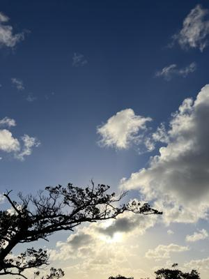
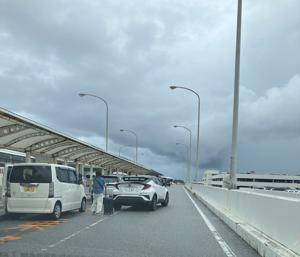

うるがいの話 ある日
最新: 予定変更【うるがいの話 ある日】とは 一日だけのプログです
『うるがいの話』の最新一日だけのプログで、通信料が少なく経済的だ。カニの画像をクリックすると全ての日付が載る『うるがいの話』サイトを表示します
|
|
【うるがいの話】 うるがい(ｳﾙｶﾞｲ urugai)とは、『もずくがに』の名前でとても大きくなります。 |
|---|---|
|
|
【カミマヤーの話】 猫のことを方言でマヤーといいます。カミマヤー（kamimayaa）とは、神の猫のことです。 |
|
【たながぁの音楽】 たながぁ（ﾀﾅｶﾞｰ tanagaa）とは手長えびのことで、何種類かあり大きいのは車 エビぐらいになります。 |

|
【ぶながぁの話】 ぶながぁ(ﾌﾞﾅｶﾞｰ bunagaa)とは、赤い髪の毛、赤い身体、そして身長は１ｍ２０ｃｍ ぐらい、川の蟹を食べているの目撃された。場所は沖縄県国頭郡大宜味村のと ある村僕の隣近所に住んでいる爺さんから、聞いた話です。 |
|
|
【ギーマの話】 ギーマ(giima)とは、山原の里山に咲くスズランに似た、 花を付けます。実は食べられます、 気が付くと口の周りが紫になっています。 |
2024年09月13日 (金）予定変更
15:03

『今日の１５時に変更した』と子供から、連絡があった。お！、了解と返
信する。本来なら明日の８時だが、ホテルは？と聞くと一万円で羽田空港
のホテルだと、そうだろうな都内だと高くて！と聞く。
那覇空港の停車場は、混んでいた。道路に停止しているので通れない。

お義母さん敬老の日を兼ねて、あした家に連れてきて寿司を食べさせる計
画だったが、雨が降ると移動が危険なので中止にした。
コドモの友達のお姉さんの結婚式は日曜日！、やるのだろう、恐らく。
工事現場では、台風対策のためネットを取り外したり、畳んでいた。
１４時５８分 ビットコインの総資産 ￥２３、７０７（↓３８１）